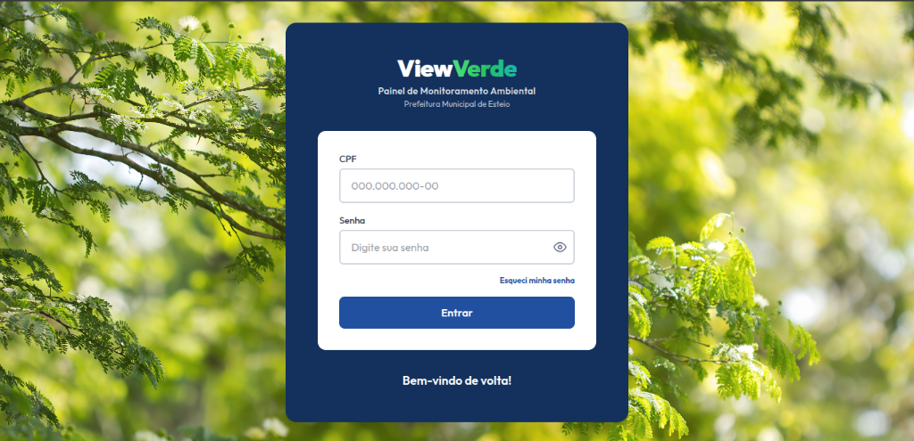

P.01 // CIVIC TECH & FULLSTACK
Portal PMA — Prefeitura de Esteio
Portal administrativo que digitalizou o acesso a serviços municipais para os colaboradores de iniciativa publica da Prefeitura Municipal de Esteio/RS. Desenvolvido com arquitetura moderna e escalável, resolvendo uma dor real da administração.
Construído com:
- Angular
- Angular Material
- Google icons
- TypeScript
- TailwindCSS
- HTML Semântico
- CSS Moderno
- WCAG AA
- Java 25
- Spring Boot 3
- Docker
- PostgreSQL
- REST APIs
- JPA
- Hibernate
- JUnit 5
- Mockito
- Swagger
Frontend
Backend
Ver no GitHub →
Produção / Nuvem

Acessar aplicação ↗